This result is for this particular situation; you will get a different result for a different shape or a different axis.
Section 10.2 Moments of Inertia of Common Shapes
In following sections we will use the integral definitions of moment of inertia (10.1.3) to find the moments of inertia of five common shapes: rectangle, triangle, circle, semi-circle, and quarter-circle with respect to a specified axis. The integration techniques demonstrated can be used to find the moment of inertia of any two-dimensional shape about any desired axis.
Moments of inertia depend on both the shape, and the axis. Pay attention to the placement of the axis with respect to the shape, because if the axis is located elsewhere or oriented differently, the results will be different.
We will begin with the simplest case: the moment of inertia of a rectangle about a horizontal axis located at its base. This case arises frequently and is especially simple because the boundaries of the shape are all constants.
Subsection 10.2.1 Moment of Inertia of a Rectangle
Consider the \((b \times h)\) rectangle shown. This rectangle is oriented with its bottom-left corner at the origin and its upper-right corner at the point \((b,h)\text{,}\) where \(b\) and \(h\) are constants.
What is the moment of inertia of this rectangle with respect to the \(x\) axis?
To find the moment of inertia, divide the area into square differential elements \(dA\) at \((x,y)\) where \(x\) and \(y\) can range over the entire rectangle and then evaluate the integral using double integration.
The differential element \(dA\) has width \(dx\) and height \(dy\text{,}\) so
\begin{equation}
dA = dx\ dy = dy\ dx\text{.}\tag{10.2.1}
\end{equation}
It would seem like this is an insignificant difference, but the order of \(dx\) and \(dy\) in this expression determines the order of integration of the double integral. We will try both ways and see that the result is identical.
Subsubsection Using \(dA = dx\ dy\)
First, we will evaluate (10.1.3) using \(dA = dx\ dy\text{.}\)
If you are not familiar with double integration, briefly you can think of a double integral as two normal single integrals, one ‘inside’ and the other ‘outside,’ which are evaluated one at a time from the inside out. Our integral becomes
\begin{align*}
I_x \amp = \int_A y^2 dA \\
\amp = \iint y^2 \underbrace{dx\ dy}_{dA}\\
\amp = \underbrace{\int_\text{bottom}^\text{top} \underbrace{\left [ \int_\text{left}^\text{right} y^2 dx \right ]}_\text{inside} dy }_\text{outside}
\end{align*}
The limits on double integrals are usually functions of \(x\) or \(y\text{,}\) but for this rectangle the limits are all constants. The bottom and top limits are \(y=0\) and \(y=h\text{;}\) the left and right limits are \(x=0\) and \(x = b\text{.}\) Note that the \(y^2\) term can be taken out of the inside integral, because in terms of \(x\text{,}\) it is constant.
Inserting \(dx\ dy\) for \(dA\) and the limits into (10.1.3), and integrating starting with the inside integral gives
\begin{align*}
I_x \amp= \int_A y^2 dA \\
\amp = \int_0^h \int_0^b y^2\ dx\ dy \\
\amp = \int_0^h y^2 \int_0^b dx \ dy \\
\amp = \int_0^h y^2 \boxed{ b \ dy} \\
\amp = b \int_0^h y^2\ dy \\
\amp = b \left .
\frac{y^3}{3} \right \vert_0^h
\end{align*}
.
Evaluating the limit gives the result
\begin{equation}
I_x = \frac{b h^3}{3}\text{.}\tag{10.2.2}
\end{equation}
This is the formula for the moment of inertia of a rectangle about an axis passing through its base, and is worth remembering.
The boxed quantity is the result of the inside integral times \(dx\text{,}\) and can be interpreted as the differential area of a horizontal strip,
\begin{equation*}
dA = b\ dy\text{.}
\end{equation*}
This will allow us to set up a problem as a single integral using strips and skip the inside integral completely as we will see in Subsection 10.2.2.
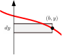
This result means that the moment of inertia of the rectangle depends only on the dimensions of the base and height and has units \([\textrm{length}]^4\text{.}\) The height term is cubed and the base is not, which is unsurprising because the moment of inertia gives more importance to parts of the shape which are farther away from the axis. Doubling the width of the rectangle will double \(I_x\) but doubling the height will increase \(I_x\) eightfold. In all moment of inertia formulas, the dimension perpendicular to the axis is always cubed.
Warning 10.2.2.
Subsubsection Using \(dA = dy\ dx\)
Now, we will evaluate (10.1.3) using \(dA = dy\ dx\) which reverses the order of integration and means that the integral over \(y\) gets conducted first. Since the distance-squared term \(y^2\) is a function of \(y\) it remains inside the inside integral this time and the result of the inside integral is not an area as it was previously.
\begin{align*}
I_x \amp = \int_A y^2\ dA \\
\amp = \int_0^b \int_0^h y^2 \ dy \ dx\\
\amp = \int_0^b \left .
\frac{y^3}{3} \ dy \right \vert_0^h \ dx\\
\amp = \int_0^b \boxed{\frac{h^3}{3}\ dx} \\
\amp = \frac{h^3}{3} \int_0^b \ dx \\
I_x \amp = \frac{bh^3}{3}
\end{align*}
.
As before, the result is the moment of inertia of a rectangle with base \(b\) and height \(h\text{,}\) about an axis passing through its base. We have found that the moment of inertia of a rectangle about an axis through its base is (10.2.2), the same as before.
The boxed quantity is the result of the inside integral times \(dx\text{,}\) and can be interpreted as the differential moment of inertia of a vertical strip about the \(x\) axis. This is consistent our previous result. The vertical strip has a base of \(dx\) and a height of \(h\text{,}\) so its moment of inertia by (10.2.2) is
\begin{equation}
dI_x = \frac{h^3}{3} dx\text{.}\tag{10.2.3}
\end{equation}
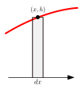
We will use these results to set up problems as a single integral which sum the moments of inertia of the differential strips which cover the area in Subsection 10.2.3.
Example 10.2.3. \(I_y\) of a Rectangle.
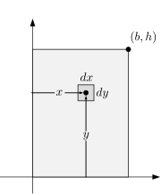
Find the moment of inertia of the rectangle about the \(y\) axis using square differential elements \(dA\text{.}\)
Answer.
\begin{equation*}
I_y = \frac{1}{3} hb^3
\end{equation*}
Solution 1.
Following the same procedure as before, we divide the rectangle into square differential elements \(dA = dx\ dy\) and evaluate the double integral for \(I_y\) from (10.1.3) first by integrating over \(x\text{,}\) and then over \(y\text{.}\)
\begin{align*}
I_y \amp = \int_A x^2 dA \\
\amp = \int_0^h \int_0^b x^2\ dx\ dy\\
\amp = \int_0^h \left [ \int_0^b x^2\ dx \right ] \ dy\\
\amp = \int_0^h \left [ \frac{x^3}{3}\right ]_0^b \ dy\\
\amp = \int_0^h \boxed{\frac{b^3}{3} dy} \\
\amp = \frac{b^3}{3} y \Big |_0^h \\
I_y \amp = \frac{b^3h}{3}
\end{align*}
The formula for \(I_y\) is the same as the formula as we found previously for \(I_x\) except that the base and height terms have reversed roles. Here, the horizontal dimension is cubed and the vertical dimension is the linear term. In all moment of inertia formulas, the dimension perpendicular to the axis is cubed.
Solution 2.
This solution demonstrates that the result is the same when the order of integration is reversed. This time we evaluate \(I_y\) by dividing the rectangle into square differential elements \(dA = dy\ dx\) so the inside integral is now with respect to \(y\) and the outside integral is with respect to \(x\text{.}\)
\begin{align*}
I_y \amp = \int_A x^2\ dA \\
\amp = \int_0^b x^2 \left [ \int_0^h \ dy \right ] \ dx\\
\amp = \int_0^b x^2\ \boxed{h\ dx} \\
\amp = h \int_0^b x^2\ dx \\
\amp = h \left.
\frac{x^3}{3} \right |_0^b \\
I_y \amp = \frac{hb^3}{3}
\end{align*}
Subsubsection Centroidal Moment of Inertia
As discussed in Subsection 10.1.3, a moment of inertia about an axis passing through the area’s centroid is a Centroidal Moment of Inertia. The convention is to place a bar over the symbol \(I\) when the axis is centroidal.
The following example finds the centroidal moment of inertia for a rectangle using integration.
Example 10.2.4. Rectangle.
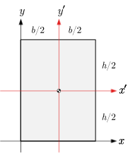
Use integration to find the moment of inertia of a \((b \times h)\) rectangle about the \(x'\) and \(y'\) axes passing through its centroid.
Indicate that the result is a centroidal moment of inertia by putting a bar over the symbol \(I\text{.}\)
Answer.
\begin{align*}
\bar{I}_{x'} \amp = \frac{1}{12}bh^3\\
\bar{I}_{y'} \amp = \frac{1}{12}hb^3
\end{align*}
.
Solution.
We can use the same approach with \(dA = dy\ dx\text{,}\) but now the limits of integration over \(y\) are now from \(-h/2\) to \(h/2\text{.}\)
\begin{align*}
\bar{I}_{x'} \amp = \int_A y^2\ dA \\
\amp = \int_0^b \int_{-h/2}^{h/2} y^2 \ dy \ dx\\
\amp = \int_0^b \left [ \frac{y^3}{3} \ dy \right ]_{-h/2}^{h/2} \ dx\\
\amp = \frac{h^3}{12} \int_0^b \ dx \\
\bar{I}_{x'} \amp = \frac{bh^3}{12}
\end{align*}
Notice that the centroidal moment of inertia of the rectangle is smaller than the corresponding moment of inertia about the baseline.
The solution for \(\bar{I}_{y'}\) is similar.
Thinking Deeper 10.2.5. Stresses in a Rectangular Beam.
To provide some context for area moments of inertia, let’s examine the internal forces in a elastic beam. Assume that some external load is causing an external bending moment which is opposed by the internal forces exposed at a cut.
When an elastic beam is loaded from above, it will sag. Fibers on the top surface will compress and fibers on the bottom surface will stretch, while somewhere in between the fibers will neither stretch or compress. The points where the fibers are not deformed defines a transverse axis, called the neutral axis. The neutral axis passes through the centroid of the beam’s cross section.
The change in length of the fibers are caused by internal compression and tension forces which increase linearly with distance from the neutral axis. The internal forces sum to zero in the horizontal direction, but they produce a net couple-moment which resists the external bending moment.
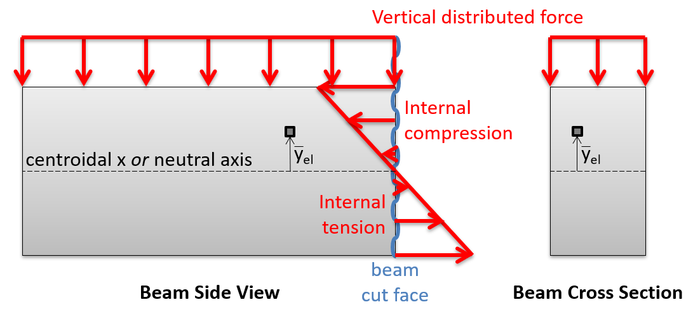
Think about summing the internal moments about the neutral axis on the beam cut face. This moment at a point on the face increases with the square of the distance \(y\) of the point from the neutral axis because both the internal force and the moment arm are proportional to this distance. The appearance of \(y^2\) in this relationship is what connects a bending beam to the area moment of inertia.
The shape of the beam’s cross-section determines how easily the beam bends. A beam with more material farther from the neutral axis will have a larger moment of inertia and be stiffer. Of course, the material of which the beam is made is also a factor, but it is independent of this geometrical factor.
Subsection 10.2.2 Moment of Inertia of a Triangle
We saw in the last section that when solving (10.1.3) the double integration could be conducted in either order, and that the result of completing the inside integral was a single integral. We will use these observations to optimize the process of finding moments of inertia for other shapes by avoiding double integration.
The most straightforward approach is to use the definitions of the moment of inertia (10.1.3) along with strips parallel to the designated axis, i.e. horizontal strips when you want to find the moment of inertia about the \(x\) axis and vertical strips for the moment of inertia about the \(y\) axis.
This approach only works if the bounding function can be described as a function of \(y\) and as a function of \(x\text{,}\) to enable integration with respect to \(x\) for the vertical strip, and with respect to \(y\) for the horizontal strip.
Example 10.2.7. Triangle.
Instructions.
Find the moment of inertia of the \((b \times h)\) right triangle with respect to the \(x\) and \(y\) axes?
Answer.
\begin{equation}
I_x = \frac{bh^3}{12} \qquad I_y = \frac{b^3h}{4}\tag{10.2.4}
\end{equation}
Solution.
As we did when finding centroids in Section 7.7 we need to evaluate the bounding function of the triangle. The bottom are constant values, \(y=0\) and \(x=b\text{,}\) but the top boundary is a straight line passing through the origin and the point at \((b,h)\text{,}\) which has the equation
\begin{equation}
y(x) = \frac{h}{b} x\text{.}\tag{10.2.5}
\end{equation}
By inspection we see that the a vertical strip extends from the \(x\) axis to the function so \(dA= y\ dx\text{.}\)
Since vertical strips are parallel to the \(y\) axis we can find \(I_y\) by evaluating this integral with \(dA = y\ dx\text{,}\) and substituting \(\frac{h}{b} x\) for \(y\)
\begin{align*}
I_y \amp = \int_A x^2\ dA\\
\amp = \int_0^b x^2\ y\ dx\\
\amp = \int_0^b x^2 \left (\frac{h}{b} x \right ) dx\\
\amp = \frac{h}{b} \int_0^b x^3 dx\\
\amp = \frac{h}{b} \left .
\frac{x^4}{4} \right\vert_0^b\\
I_y \amp = \frac{hb^3}{4}
\end{align*}
.
Similarly we will find \(I_x\) using horizontal strips, by evaluating this integral with \(dA = (b-x) dy\)
\begin{align*}
I_x \amp = \int_A y^2 dA
\end{align*}
.
We are expressing \(dA\) in terms of \(dy\text{,}\) so everything inside the integral must be constant or expressed in terms of \(y\) in order to integrate. In particular, we will need to solve (10.2.5) for \(x\) as a function of \(y.\) This is not difficult.
\begin{equation*}
x(y) = \frac{b}{h} y\text{.}
\end{equation*}
Once this has been done, evaluating the integral is straightforward.
\begin{align*}
I_x \amp = \int_A y^2\ dA\\
\amp = \int_0^h y^2 (b-x)\ dy\\
\amp = \int_0^h y^2 \left (b - \frac{b}{h} y \right ) dy\\
\amp = b\int_0^h y^2 dy - \frac{b}{h} \int_0^h y^3 dy\\
\amp = \frac{bh^3}{3} - \frac{b}{h} \frac{h^4}{4} \\
I_x \amp = \frac{bh^3}{12}
\end{align*}
This is the moment of inertia of a right triangle about an axis passing through its base. By reversing the roles of b and h, we also now have the moment of inertia of a right triangle about an axis passing through its vertical side.
\begin{equation*}
I_y = \frac{hb^3}{12}\text{.}
\end{equation*}
Subsection 10.2.3 Moment of Inertia of a Differential Strip
We saw in Subsection 10.2.2 that a straightforward way to find the moment of inertia using a single integration is to use strips which are parallel to the axis of interest, so use vertical strips to find \(I_y\) and horizontal strips to find \(I_x\text{.}\)
This method requires expressing the bounding function both as a function of \(x\) and as a function of \(y\text{:}\) \(y = f(x)\) and \(x = g(y)\text{.}\) There are many functions where converting from one form to the other is not easy.
As an example, lets try finding \(I_x\) and \(I_y\) for the spandrel bounded by
\begin{equation*}
y = f(x) = x^3+x, \text{ the } x \text{ axis, and }x=1\text{.}
\end{equation*}
Finding \(I_y\) using vertical strips is relatively easy. Letting \(dA = y\ dx\) and substituting \(y = f(x) = x^3 +x\) we have
\begin{align*}
I_y \amp = \int_A x^2\ dA\\
\amp = \int_0^1 x^2 y\ dx\\
\amp = \int_0^1 x^2 (x^3+x)\ dx\\
\amp = \int_0^1 (x^5 + x^3) dx\\
\amp = \left .
\frac{x^6}{6} + \frac{x^4}{4} \right \vert_0^1\\
I_y \amp = \frac{5}{12}
\end{align*}
.

Finding \(I_x\) using horizontal strips is anything but easy. In fact, the integral that needs to be solved is this monstrosity
\begin{align*}
I_x \amp = \int_A y^2\ (1-x)\ dy\\
\amp = \int_0^2 y^2 \left (1- \frac{\sqrt[3]{2} \left ( \sqrt{81 y^2 + 12} + 9y \right )^{2/3} - 2 \sqrt[3]{3}}{6^{2/3} \sqrt[3]{\sqrt{81 y^2 + 12} + 9y}} \right )\ dy\\
\amp \dots \text{ and then a miracle occurs}\\
I_x \amp = \frac{49}{120}
\end{align*}
.
Clearly, a better approach would be helpful.
When using strips which are parallel to the axis of interest is impractical mathematically, the alternative is to use strips which are perpendicular to the axis.
Applying our previous result (10.2.2) to a vertical strip with height \(h\) and infinitesimal width \(dx\) gives the strip’s differential moment of inertia. In most cases, \(h\) will be a function of \(x\text{.}\)
\begin{align}
I_x \amp= \frac{bh^3}{3} \amp \amp \rightarrow \amp dI_x \amp= \frac{h^3}{3} dx\tag{10.2.6}
\end{align}
. This is the same result that we saw previously (10.2.3) after integrating the inside integral for the moment of inertia of a rectangle.
This result makes it much easier to find \(I_x\) for the spandrel that was nearly impossible to find with horizontal strips.
\begin{align*}
I_x \amp = \int_A dI_x =\frac{y^3}{3} dx\\
\amp = \int_0^1 \frac{(x^3+x)^3}{3} dx\\
\amp = \frac{1}{3} \int_0^1 (x^9+3x^7 + 3x^5 +x^3) dx\\
\amp = \frac{1}{3} \left [ \frac{x^{10}}{10} + \frac{3 x^8}{8} + \frac{3 x^6}{6} + \frac{x^4}{4} \right ]_0^1\\
\amp = \frac{1}{3} \left [\frac{1}{10} + \frac{3}{8} + \frac{3}{6} + \frac{1}{4} \right ]\\
\amp = \frac{1}{3}\left [ \frac{12 + 45 + 60 + 30}{120} \right ] \\
I_x \amp = \frac{49}{120}
\end{align*}
The same approach can be used with a horizontal strip \(dy\) high and \(b\) wide, in which case we have
\begin{align}
I_y \amp= \frac{b^3h}{3} \amp \amp \rightarrow \amp dI_y \amp = \frac{b^3}{3} dy\tag{10.2.7}
\end{align}
. The width \(b\) will usually have to be expressed as a function of \(y\text{.}\)
The expression for \(dI_x\) assumes that the vertical strip has a lower bound on the \(x\) axis. If this is not the case, then find the \(dI_x\) for the area between the bounds by subtracting \(dI_x\) for the rectangular element below the lower bound from \(dI_x\) for the element from the \(x\) axis to the upper bound. A similar procedure can be used for horizontal strips.
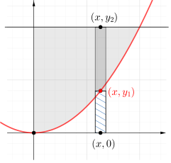
\begin{equation*}
dI_x = \frac{y_2^3}{3} - \frac{y_1^3}{3} = \frac{1}{3}(y_2^3-y_1^3)
\end{equation*}
This approach is illustrated in the next example.
Example 10.2.8. Moment of Inertia for Area Between Two Curves.
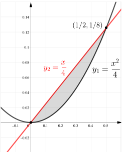
Use vertical strips to find both \(I_x\) and \(I_y\) for the area bounded by the functions
\begin{align*}
y_1 \amp = x^2/2 \text{ and,} \\
y_2 \amp = x/4
\end{align*}
. Units are cm.
Answer.
\begin{align*}
I_x \amp = 3.49 \times \cm{10^{-6}}^4 \amp I_y \amp = 7.81 \times \cm{10^{-6}}^4
\end{align*}
Solution.
-
Set up the integral.The area is bounded by the functions\begin{align*} y_2 \amp = x/4 \amp y_2 \amp = x^2/2 \end{align*}By equating the two functions, we learn that they intersect at \((0,0)\) and \((1/2,1/8)\text{,}\) so the limits on \(x\) are \(x=0\) and \(x=1/2\text{.}\)The differential area \(dA\) for vertical strip is\begin{equation*} dA = (y_2-y_1)\ dx = \left (\frac{x}{4} - \frac{x^2}{2} \right)dx\text{.} \end{equation*}
-
Find \(I_y\).For vertical strips, which are parallel to the \(y\) axis we can use the definition of the Moment of Inertia.\begin{align*} I_y \amp = \int x^2 dA\\ \amp = \int_0^{0.5} {x^2} \left ( \frac{x}{4} - \frac{x^2}{2} \right ) dx\\ \amp= \int_0^{1/2} \left( \frac{x^3}{4} - \frac{x^4}{2} \right) dx \\ \amp= \left . \left( \frac{x^4}{16} - \frac{x^5}{12} \right )\right \vert_0^{1/2}\\ \amp= \left( \frac{({1/2})^4}{16} - \frac{{(1/2)}^5}{10} \right ) \\ \amp = \frac{1}{64} \left( \frac{1}{4}- \frac{1}{5} \right)\\ I_y \amp = \frac{1}{1280} = \cm{7.81 \times 10^{-4}}^4 \end{align*}
-
Find \(I_x\).For vertical strips, which are perpendicular to the \(x\) axis, we will take subtract the moment of inertia of the area below \(y_1\) from the moment of inertia of the area below \(y_2\text{.}\)\begin{align*} I_x \amp = \int_{A_2} dI_x - \int_{A_1} dI_x\\ \amp = \int_0^{1/2} \frac{y_2^3}{3} dx - \int_0^{1/2} \frac{y_1^3}{3} dx\\ \amp = \frac{1}{3} \int_0^{1/2} \left[\left(\frac{x}{4}\right)^3 -\left(\frac{x^2}{2}\right)^3 \right] dx\\ \amp = \frac{1}{3} \int_0^{1/2} \left[\frac{x^3}{64} -\frac{x^6}{8} \right] dx\\ \amp = \frac{1}{3} \left[\frac{x^4}{256} -\frac{x^7}{56} \right]_0^{1/2} \\ I_x \amp = \frac{1}{28672} = 3.49 \times \cm{10^{-6}}^4 \end{align*}
Subsection 10.2.4 Circles, Semicircles, and Quarter-circles
In this section, we will use polar coordinates and symmetry to find the moments of inertia of circles, semi-circles and quarter-circles.
We will start by finding the polar moment of inertia of a circle with radius \(r\text{,}\) centered at the origin. You will recall from Subsection 10.1.4 that the polar moment of inertia is similar to the ordinary moment of inertia, except the distance squared term is the distance from the element to a point in the plane rather than the perpendicular distance to an axis, and it uses the symbol \(J\) with a subscript indicating the point.
To take advantage of the geometry of a circle, we’ll divide the area into thin rings, as shown in the diagram, and define the distance from the origin to a point on the ring as \(\rho\text{.}\) The reason for using thin rings for \(dA\) is the same reason we used strips parallel to the axis of interest to find \(I_x\) and \(I_y\text{;}\) all points on the differential ring are the same distance from the origin, so we can find the moment of inertia using single integration.
Instructions.
The differential area of a circular ring is the circumference of a circle of radius \(\rho\) times the thickness \(d\rho\text{.}\)
\begin{equation*}
dA = 2 \pi \rho\ d\rho\text{.}
\end{equation*}
Adapting the basic formula for the polar moment of inertia (10.1.5) to our labels, and noting that limits of integration are from \(\rho = 0\) to \(\rho = r\text{,}\) we get
\begin{align}
J_O \amp= \int_A r^2\ dA \amp \amp \rightarrow \amp J_O \amp = \int_0^r \rho^2\ 2\pi\rho \ d\rho \tag{10.2.8}
\end{align}
.
Proceeding with the integration,
\begin{align}
J_O \amp = \int_0^r \rho^2\ 2\pi\rho \ d\rho\notag\\
\amp = 2 \pi \int_0^r \rho^3 d\rho\notag\\
\amp = 2 \pi \left [ \frac{\rho^4}{4}\right ]_0^r\notag\\
J_O \amp = \frac{\pi r^4}{2}\tag{10.2.9}
\end{align}
.
This is the polar moment of inertia of a circle about a point at its center.
With this result, we can find the rectangular moments of inertia of circles, semi-circles and quarter circle simply. Noting that the polar moment of inertia of a shape is the sum of its rectangular moments of inertia \(I_x\) and \(I_y\text{,}\) these are equal to each other for a circle due to its symmetry. Therefore, by (10.5.2), which is easily proven,
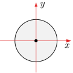
\begin{align}
J_O \amp = I_x + I_y\notag\\
\bar{I}_x \amp = \bar{I}_y = \frac{J_O}{2} = \frac{\pi r^4}{4}\tag{10.2.10}
\end{align}
.
This is the moment of inertia of a circle about a vertical or horizontal axis passing through its center.
A circle consists of two semi-circles above and below the \(x\) axis, so the moment of inertia of a semi-circle about a diameter on the \(x\) axis is just half of the moment of inertia of a whole circle. The moment of inertia about the vertical centerline is the same.
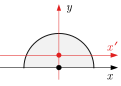
\begin{equation}
I_x = \bar{I}_y = \frac{\pi r^4}{8}\text{.}\tag{10.2.11}
\end{equation}
Similarly, the moment of inertia of a quarter circle is half the moment of inertia of a semi-circle, so
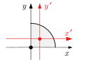
\begin{equation}
I_x = I_y = \frac{\pi r^4}{16}\text{.}\tag{10.2.12}
\end{equation}
In these diagrams, the centroidal axes are red, and moments of inertia about centroidal axes are indicated by the overbar. We will see how to use the parallel axis theorem to find the centroidal moments of inertia for semi- and quarter-circles in Section 10.3.
Subsection 10.2.5 Summary of Integration Techniques
Here is a summary of the alternate approaches to finding the moment of inertia of a shape using integration.
You may choose to divide the shape into square differential elements to compute the moment of inertia, using the fundamental definitions, The disadvantage of this approach is that you need to set up and compute a double integral. Identifying the correct limits on the integrals is often difficult.
If you would like to avoid double integration, you may use vertical or horizontal strips, but you must take care to apply the correct integral. If you use vertical strips to find \(I_y\) or horizontal strips to find \(I_x\text{,}\) then you can still use (10.1.3), but skip the double integration. When the entire strip is the same distance from the designated axis, integrating with a parallel strip is equivalent to performing the inside integration of (10.1.3).
As we have seen, it can be difficult to solve the bounding functions properly in terms of \(x\) or \(y\) to use parallel strips. In this case, you can use vertical strips to find \(I_x\) or horizontal strips to find \(I_y\) as discussed by integrating the differential moment of inertia of the strip, as discussed in Subsection 10.2.3.
| Element | \(dA\) | \(dI\) |
|---|---|---|
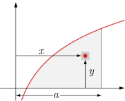 |
\(dA = dx\ dy\) or \(dA = dy\ dx\) |
\(dI_x = y^2\ dA\)
\(dI_y = x^2\ dA\)
|
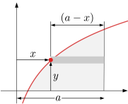 |
\(dA = (a-x)\ dy\) |
\(dI_x = y^2\ dA\)
\(dI_y = \dfrac{(a^3-x^3)}{3}\ dx \)
|
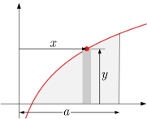 |
\(dA = y\ dx\) |
\(dI_x = \dfrac{y^3}{3}\ dx\)
\(dI_y = x^2\ dA\)
|